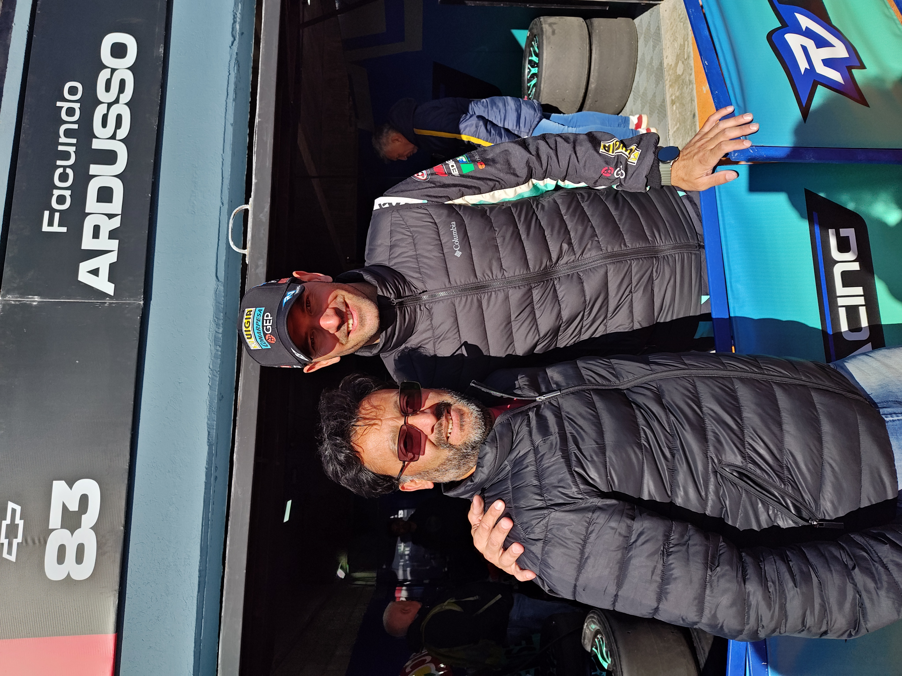
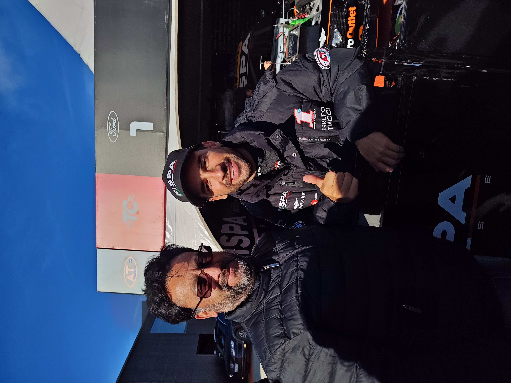
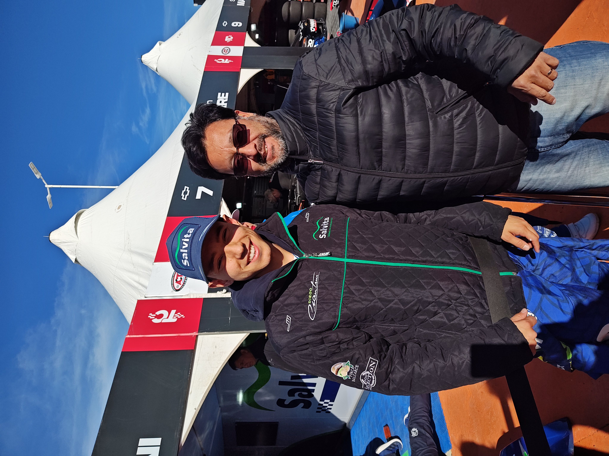

German Todino
Una foto con el gaucho German Todino

Texto del articulo que hay aca y es texto de prueba. Luciano haciendo blog
Este es un parrafo dentro del encabezado
soy un parrafo dentro de un div
Una foto con el gaucho German Todino
Texto del articulo que hay aca y es texto de prueba. Luciano haciendo blog
Una Foto con el flaco de Las Parejas
Este es otro texto del articulo que hay aca y es texto de prueba. Luciano haciendo blog
Foto con el campeon del TC: Julian Santero
Texto del articulo que hay aca y es texto de prueba. Luciano haciendo blog
Foto con el Chino Ciantini
Texto del articulo que hay aca y es texto de prueba. Luciano haciendo blog